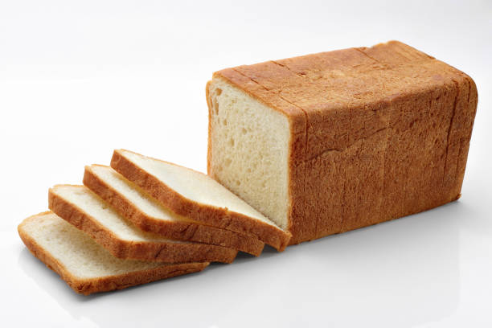
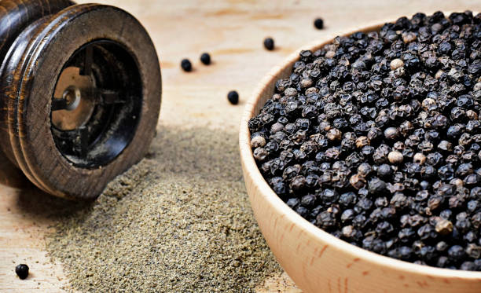
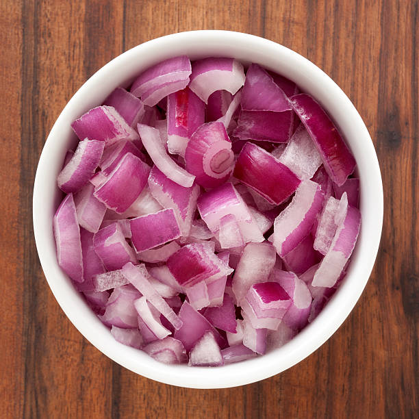
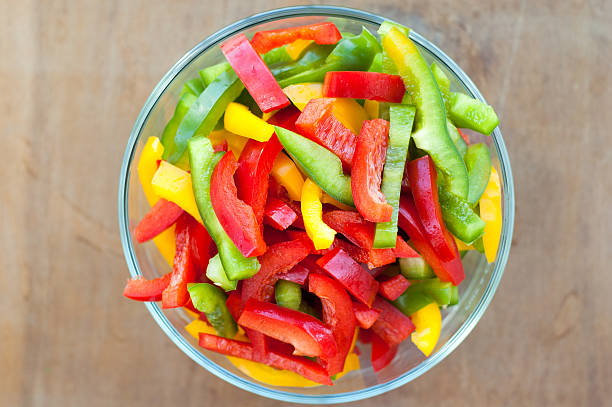
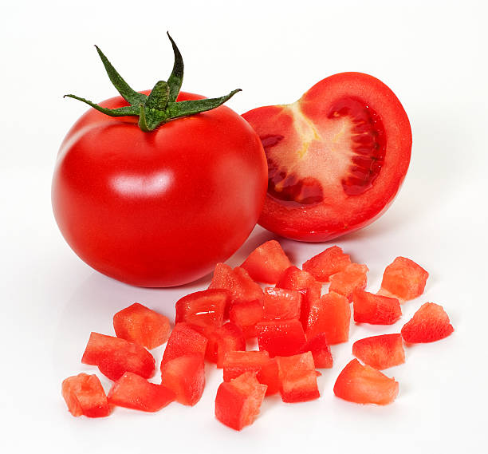
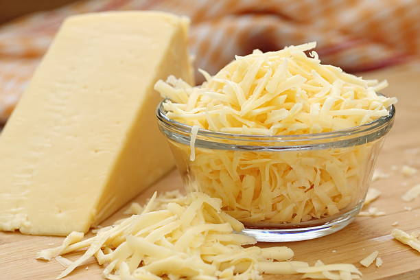
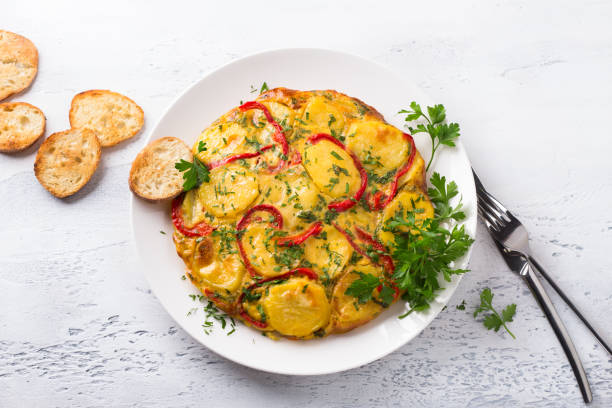

Classic Bread Omelette Recipe
The Classic Bread Omelette is a simple and satisfying breakfast or snack option that combines the richness of an omelette with the delightful crunch of toasted bread. In this recipe, two slices of your preferred bread are carefully prepared, allowing you to choose whether to keep the crust or go for a crustless option. The bread is then lightly toasted to a beautiful golden brown, enhancing its flavor and texture.
Ingredients:
| Ingredient | Quantity | Image |
|---|---|---|
| Bread slices | 2 |  |
| Eggs | 2 |  |
| Butter or oil | 1 tablespoon | |
| Salt | To taste |  |
| Black pepper | To taste |  |
| Chopped onion | 2 tablespoons |  |
| Chopped bell pepper | 2 tablespoons |  |
| Chopped tomato | 2 tablespoons |  |
| Grated cheese | 2 tablespoons |  |
| Fresh cilantro or parsley | For garnish |
Instructions:
Prepare Bread:
Start by selecting two slices of your preferred bread. You can use white bread, whole wheat, or any type of bread you like. Make sure the bread is fresh and not stale.
Remove the crust if desired:
Crust removal is optional and depends on your personal preference. Some people enjoy the crust, while others prefer a crustless omelette. If you choose to remove the crust, you can do so by using a sharp knife. Carefully trim the edges of the bread to remove the crust, leaving only the soft inner part.
Lightly toast the bread in a toaster:
To toast the bread, you have a couple of options. One convenient method is to use a toaster. Simply place the slices of bread in the toaster slots and adjust the browning setting to your liking. Toast the bread until it reaches a beautiful golden brown color. Keep an eye on it to avoid over-toasting, as the exact time may vary depending on your toaster.
Alternatively, toast on a skillet:
If you don't have a toaster or prefer to use a skillet, you can do so. Heat a non-stick skillet or frying pan over medium heat. You can add a small amount of butter or oil to the skillet to enhance the flavor and prevent sticking. Once the skillet is hot, place the slices of bread on it. Cook each side until it turns golden brown. Flip the slices as needed to ensure even toasting.
Check for desired color:
Keep a close watch on the bread during toasting. The ideal toast color is a golden brown, indicating a crispy texture on the outside while remaining soft inside.
Remove and let cool:
Once the bread reaches the desired level of toasting, carefully remove it from the toaster or skillet. Place it on a plate or a wire rack to cool slightly. Toasted bread is ready to be used as a base for your delicious bread omelette.
Serve:
Carefully fold the omelette in half with the bread inside. Garnish with fresh cilantro or parsley.
